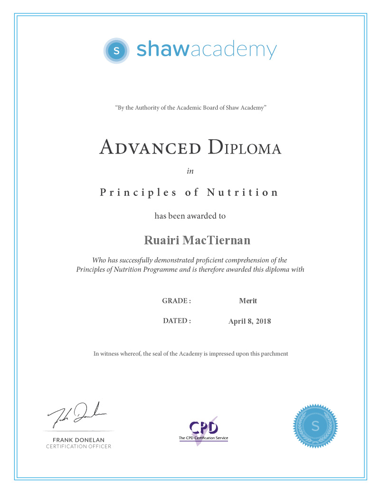
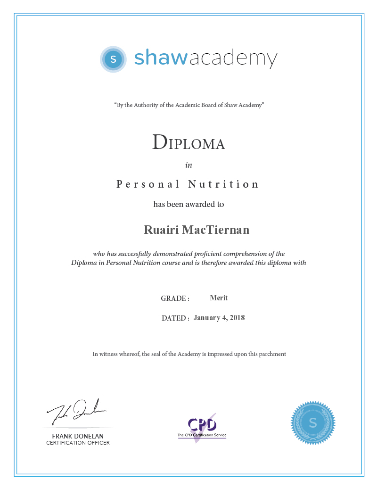
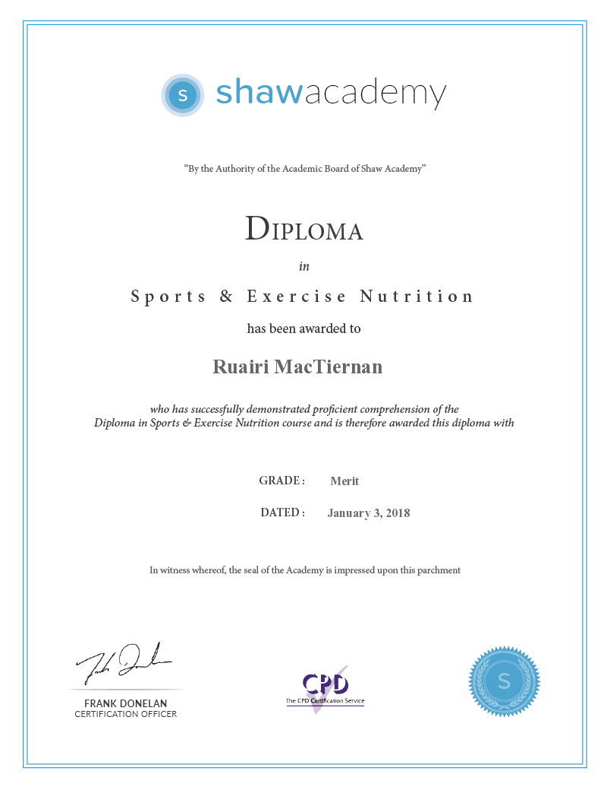
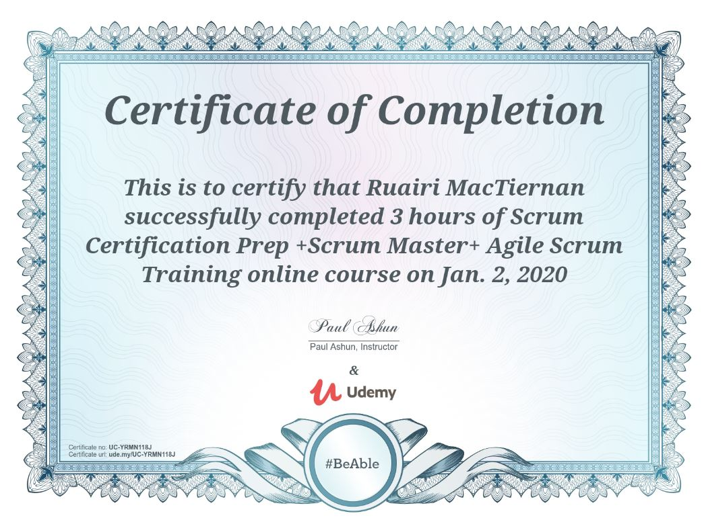

Education
2010 - 2011
IT Blanchardstown
BSc Honours in Computer Science
Second Class Honours grade 2 / GPA 2.65
- Applied Language Engineering
- Enterprise Systems
- Intelligent Computing
- Computer Network Forensics
- Text Mining & Document Processing
- Mobile Computing
- Derivation of Algorithms
- Network Security
2009 - 2010
IT Blanchardstown
BSc in Computer Science
Merit Grade 1 / GPA 3.00
- Data structures & Algorithms
- Object Orientation in design Patterns (java)
- Network Distributed Computing
- Advanced Switching
- Data Mining (rapid miner)
- Computer Graphics
- XML web services
- Remote access & Wireless networks
2008 - 2009
IT Blanchardstown
Certificate in Computing in IT
Merit Grade 2 / GPA 2.50
- GUI Programming (java)
- Operating systems (client)
- Switching Basics & Routing
- Web Media
- IT Maths
- Web Development (server)
- WAN Technologies
- Advanced Programming (java)
- Object Oriented Analysis & Design, Interactive Multimedia, Software Engineering & Testing, Operating Systems (server)
2006 - 2008
Killester College of Further education
Certificate in Data Networking
FETAC level 6
- FETAC lvl 5
- Routing Technologies
- Computer Programming C++
- Hardware Essentials
- Introduction to networking
- Networking Essentials
- Structured Cabling
- Software Systems
- FETAC lvl 6
- Network Administration
- Client server networks
- Switching Basics
- WAN technologies
- Network Models and Technologies
- System Software
2006 - 2008
Killester College of Further education
CCNA (Cisco Cerfitied Network Associate)
FETAC level 6
- FETAC lvl 5
- Routing Technologies
- Computer Programming C++
- Hardware Essentials
- Introduction to networking
- Networking Essentials
- Structured Cabling
- Software Systems
- FETAC lvl 6
- Network Administration
- Client server networks
- Switching Basics
- WAN technologies
- Network Models and Technologies
- System Software






Connect with me
linkedInEmployment History
October 2019 to current
Houghton Mifflin Harcourt
Quality Engineer in Automation
HMH RCE is a content delivery system for the HMH education content for students, teachers and parents in the HMH ED educational platform.
HMH Player is a mobile solution for ipads and chromebooks to allow the RCE content to be accessible by teachers, students and parents.
HMH Player is a mobile solution for ipads and chromebooks to allow the RCE content to be accessible by teachers, students and parents.
Responsibilities:
- Setting up the teams cross platform testing solution using browserstack
- Analysis of defects and issues with the automation
- Refactoring and rewriting of the existing automation to a new format with page object models
- Working with the Product Owner to understand the existing product and user/testing requirements and understanding the future requirements of new features. Implementation of CodeCeptJS on current project.
March 2019 to October 2019
Accela
QA Engineer (Automation)
Civic Insights and Civic Data are government applications designed to represent information for public access and civil use.
Responsibilities:
- Testing of Application software and creating bugs and defects where needed.
- Plans to start automation in the near future with undecided languages and frameworks.
- Reworking the entire Squad/feature Test Scripts
- Working with the Product Owner to define the user stories and the time frame which work can be done
- Coaching the Product Owner in development strategies with the knowledge of the current team capabilities.
- Coaching the team in the Agile SCRUM process to allow them to understand the Product owner's requirements better so that they can develop easier and faster with fewer questions and ambiguity.
- Running the daily stand up
- Hosting and participating at the end of Sprint retrospective and producing the results and required action items from it.
- Helping the team define its Way of Working and creating the Teams Social contract which they adhere to
- Empowering the development team to be able to work in a way that best fits and helping them to produce more by freeing up time and impediments.
- Sprint Backlog grooming and Feature breakdown and pointing
- Working with the PO to groom the product backlog and help with the user stories based on the requirements
August 2011 to March 2019
IBM Ireland
Software Test Engineer / Software engineer
Dec 2018 - March 2019
Curam SPM
Curam SPM is part of IBM Watson Health. Its aim is to make Social health care management easier and more streamlined, and make it easier for both government employees and average citizens to avail of government services more easily.
Responsibilities:
- Creating and Maintenance of manual critical path Test scripts.
- Creation and Verification of Defects, and updating of manual, critical path Test scripts where needed.
Automation: No automation, all testing done Manually. Platform: All browsers, Mobile devices
Dec 2016 - Dec 2018
MySA (My Salesforcs Automation)
MySA in a web app CRM solution for the business partners if IBM. On the project I was lead Software engineer in test for my squad. I was responsible for front end UI automation of the product. This involved rewriting automation code and identifying what
development feature stories were suitable for automation. Along with other members of the team I was also responsible for the SCRUM process on the team as a whole involved 3 squads plus stakeholders. While we had
no scrum master and as such we had a revolving Scrum Master that we designated the Iteration Master that changed every quarter, during this time I ran and helped run the daily stand up, retrospectives, sprint planning
and grooming, end of sprint demos and demo planning, defect triage and helping to remove blockers and impediments, Spotify health check and Agile assessment and taking care of the scrum board/wall of work and burn
up and down charts, for both the team I was on and the wider test team/guild. I also mentored a number of new and existing people on the team in the SCRUM agile methology as well as in coding and the company as
a whole. A branch off from the SalesConnect application MySA (MySA FVT Automation) is designed to replace the existing GPP (Global Partner Portal) system that is used by the IBM Business Partners (IBM product resellers)
From the ground up this is a fully Agile project with co-location of the team and squads. and is aiming towards full Test driven development (currently still training up existing testers to be able to work with
FVT Automation) MySA is a web interface that pulls data with open API’s from the back end of the SalesConnect application. All communication is done through Slack with Trello virtual wall of work whiteboard.
Responsibilities:
- Creating FVT Test Automation scripts.
- Maintenance of existing FVT test automation.
- Adding automated functionality to test against Mockery (Mocked associated system)
- SCRUM and Agile responsibilities:
- Backlog grooming
- Feature and Story Breakdown and Story pointing
- Defect analysis and triage
- End of sprint review and demos
- Helping creating the teams Social Contract and the Definition of Done
- Running and acting as my team’s point for the Scrum of Scrums between teams and the Scrum of Scrums for the end of sprint retrospectives
- Sprint planning and story pointing
Environment: AngularJS, NodeJS, Protractor, Docker, Cloudant, GitHUB, Mockery, Jenkins, Selenium Grid, ESLint.
Automation: Front-end FVT Automation is all done using Protractor and AngularJS with Node on MacBook pro’s. All code is controlled in GitHUB. All code is checked using ESLint and Travis to ensure all code is to
a predefined format and breaking any existing functionality.
Platform: Firefox ESR
Mar 2014 - Dec 2016
SalesConnect Mobile
SalesConnect Mobile is a CRM solution that works in tandem with SalesConnect to allow sales staff the ability to create leads and make oppertunities while in the field. An Annex to the SalesConnect application SalesConnect Mobile is a wider and more stand
alone application, originally started as a mobile option was then invested in as a replacement with an effort to push all sales staff to ipads and tablets. The SalesConnect Mobile app would have integration with
IBM Mobile Verse and Traveller email, IBM Connections and Docs, IBM Mobile Connect. The SalesConnect Mobile app would let a seller make and record a sale, but would also let them sync with email, Business collaborative
connections to highlight their offers and sales, make and receive phone calls, see locations on maps (google or ios maps) SalesConnect Mobile is part of the IBM Mobile First initiative.
Responsibilities:
- Creating functional test cases and test scripts.
- Executing test cases Manually against test environment .
- Creating and logging defects were found and working with business partners and developers to resolve issues.
- Running Mobile FVT Test Automation
- Maintenance of Mobile FVT Test Automation
- Cross application testing
Environment: Mobile Hybrid app with Chromedriver
Platform: BlackBerry (EOL mid 2017), Android 4.4+, iOS 7+ (Tablets and Mobile Phone)
Feb 2012 - Mar 2014
Social CRM / SalesConnect
Social CRM (or SalesConnect when it was renamed) was an InHouse development CRM system for the Sales staff to replace the existing system which was Siebel. In an effort to reduce overall cost. IBM work close with partners SugarCRM to develop the existing
Sugar CRM system which would then take the place of the older Siebel system. Sugar would then be able to leverage the IBM technology and expertise to grow their own product further once the final hand over was done.
SalesConnect also integrates with IBM connections and Documents.
Responsibilities:
- Creating and maintaining functional test cases and test scripts.
- Executing test cases Manually against test environment.
- Creating and logging defects were found and working with business partners and developers to resolve issues.
Environment: SugarCRM, DB2, Websphere, AIX, Cognos, Cast Iron, CoreMetrics, IBM Power 7
Platform: Web - Firefox ESR
Aug 2011 - Feb 2012
Social Portal
Social portal was a project to create portlets (widgets) that would run inside the IBM Websphere portal application and would be able to link in with other applications and customers such as Facebook or Twitter and
display the contents within the portlet.
Responsibilities:
- Creating functional test cases and test scripts.
- Executing test cases Manually against test environment.
- Creating and logging defects were found and working with business partners and developers to resolve issues.
Environment: IBM Websphere portal Platform: Web - Microsoft Internet Explorer
Platform: Web - Firefox ESR
Other roles & duties
Causal Analysis
For the SalesConnect project i was responsible for recording ALL production sev1 level defects and performing Causal Analysis on them to try to identify where the gaps in testing were and highlight them at the weekly
release meeting, follow up with emails to various area leads would be sent out to highlight the problems and try to suggest solutions to ensure they do not come back again. Custom Excel spreadsheets were used for
all tracking and graphs.
Mentoring and On-Boarding
I was a mentor for a number of new hires in IBM to help them progress within the company. Out of the 4 that I took on 3 gained full time positions from the existing internship positions and subsequent promotions to
higher bands.
Security testing
Designated Security tester using Rational AppScan tool to test for vulnerabilities in the SalesConnect product. creating scripts which would run on a release by release basis to ensure that no vulnerabilities we present
or that any would be found.
Hardware management
An unofficial role, I was responsible for handling all incoming and outgoing hardware including Laptops and Mobile devices. ensuring that they were in a good state and fit for transfer or ensuring they were disposed
of by the IBM disposal team.